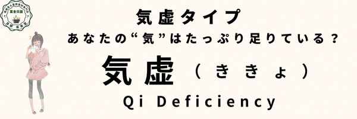

気虚タイプ
体質 気虚タイプ
お腹（胃腸）が弱くエネルギー不足の「気虚タイプ」
からだ全体の「気」（エネルギー）が不足して、疲れやすく、体力が続かない体質です。
体質の説明、主な特徴
胃腸が弱くて、疲れやすい。「気」が不足気味なので気の補充が必要ですが、その前に脾（胃腸）のメンテナンスが大切です！
『後天の気』というエネルギーをつくる脾（胃腸）の働きが弱っています。
肥満気味でむくみやすい。疲れやすい、やる気がでない、湿度が高いとしんどい。
軟便。おりもの多い。甘いものや油っこいものが好き。
なりやすい不調・病態（からだとこころ）
胃腸が弱く食欲不振。慢性胃腸炎、下痢・便秘。胃下垂、脱肛、腎臓下垂、子宮下垂、子宮脱など内臓下垂。
立ちくらみや低血圧、パワーの不足。倦怠感や手足がだるい。免疫力低下、内出血、風邪引きやすい。
慢性気管支炎、気管支喘息、アトピー、多汗症、紫斑病、ネフローゼなど。
舌の特徴（正常との比較）
【正常な舌の特徴】
- 色：淡紅色（健康的な薄い赤）
- 舌苔：うすく白く、均一に分布
- 形：舌は適度な厚さで、輪郭がはっきり
- 舌質：潤いがあり、ヒビ割れなし
- 舌下静脈：ほとんど目立たない
正常な舌（画像）

【気虚体質：舌の特徴】
- 色：淡白（やや白っぽい）
- 舌苔：薄くて白い、または無苔気味
- 形：やや腫れぼったい、歯痕がつきやすい
- 舌質：潤いが少なく、だるそうな印象
気虚の舌（画像）

他の体質との関連
「腎陽虚」の特徴もある。（脾腎陽虚証） 「湿痰」、「血虚」、「血瘀」にもなりやすい。
養生ポイント（未病先防・既病防変含む）
必要以上にムリして食べないこと。胃腸を冷やさないこと。冷たい飲み物や食べ物、生もの（魚、野菜、果物）、甘い物を避ける。
未病先防…１
元気が無いからといってムリに食べるのはかえって脾（胃腸）の負担を増やし働きを低下させてしまいます。
肉、魚、乳製品といった高たんぱく、高脂肪食ほど消化にエネルギーを使い、『脾虚』に拍車をかけるので要注意です。
逆にファスティング（断食）やビーガン（極端に肉などを食べない）など偏った食事を続けることも脾（胃腸）を弱めます。旬の物を消化しやすく調理して腹八分目に。
ファスティングやビーガンなども必要な時もありますが、今の自分の体質にとって必要かどうかを考えてやることが大切です。
未病先防…２
冷たいものや水分を取りすぎると、脾（胃腸）の熱を奪い働きを低下させます。
冷たい飲食物や刺身などの生ものやトマトやきゅうりなどの生野菜、果物も摂り過ぎに注意です。
食欲がない時は、お粥やスープなど温かく柔らかく調理した物を摂りましょう。薄着や冷房で外側から冷やすのにも注意が必要です。
既病防変
弱いままじゃ困るとカラダが実感することが大切。
カラダを動かして「気」が足りないことをカラダに実感させ、しっかりと睡眠をとってたっぷり休み、翌日またカラダを動かして疲れましょう。
それを少しずつ繰り返して脾気（胃腸のパワー）を強めましょう。
経絡/ヨガ/運動処方
脾経・胃経。
ゆったりした有酸素運動や軽い全身運動。あぐらのポーズ、膝打ち、開脚、上体そらし体操。
効果的なツボ=脾兪、足三里、陰稜泉。
効果的なヨガ＝バッダコナアサナ（合せき）、スプタヴィラアサナ（膝打ち）、ブジャンガアサナ（コブラ）、ウシュトラアサナ（ラクダ）など
薬膳施治
益気補虚（えっきほきょ）
胃腸の働きを良くして気を補う
おすすめの食材
米、もち米、山芋、じゃがいも、椎茸、にんじん、豆腐、鶏肉、うずら卵、牛肉、青魚など。
消化に良いもの、温かいもの、柔らかいもの。
夏場の冷たい料理には、生姜、ネギ、みょうが、わさび、からしなど温性の薬味たっぷりで。
ただし食材には温・熱・平・涼・寒の五つの性質があります。今の自分の体質をチェックし、寒熱虚実の傾きを把握したうえで、そのバランスを中庸に整えてくれる食材をとるようにしましょう。
良いと言われる物でもそればっかり摂り過ぎるのは良くありません。
おすすめ商品（カテゴリーリンクで対応）
- なつめ薬膳茶▶︎この商品のページを見る（京都 楽楽堂）
- 枸杞とバラ 養眠茶▶︎この商品のページを見る（京都 楽楽堂）
- 水巡茶▶︎この商品のページを見る（京都 楽楽堂）
- そろそろダイエット茶▶︎この商品のページを見る（京都 楽楽堂）
- からだを温める黒のお茶▶︎この商品のページを見る（京都 楽楽堂）
- なつめ▶︎この商品のページを見る（京都 楽楽堂）
- 蓮の実▶︎この商品のページを見る（京都 楽楽堂）
- 枸杞の実▶︎この商品のページを見る（京都 楽楽堂）
- 竜眼▶︎この商品のページを見る（京都 楽楽堂）
- 白きくらげ▶︎この商品のページを見る（京都 楽楽堂）
- 松の実▶︎この商品のページを見る（京都 楽楽堂）
- 四神湯スープ▶︎この商品のページを見る（京都 楽楽堂）
- 全部食べる薬膳茶 桂棗黒豆茶▶︎この商品のページを見る（京都 楽楽堂）
- いろいろお豆のお汁粉セット▶︎この商品のページを見る（京都 楽楽堂）
- ほっこりポカポカあたため乃湯▶︎この商品のページを見る（京都 楽楽堂）
注意するもの
生もの、脂っこいもの、繊維質の多いものなど消化しにくいものは避ける。
寒涼食材の摂り過ぎに注意。
摂ると良い四気・五味・帰経食材
性：温性・平性 味：甘味・辛味 帰経：肝・心・脾・肺・腎・胆・小腸・胃・膀胱
国際中医師からのアドバイス
無理せず、コツコツと「気」を養うことが大切です。
食事や生活習慣を少し見直すだけで、からだにチカラが湧いてきます。
あなたのペースで、毎日をもっと軽やかに過ごしていきましょう。
脾は「気血生化の源」と言われ、気血製造機や気血製造工場のようなものです。
せっかく良い食べ物や飲み物を飲んでも機械がオンボロでは良い製品が作れないように、脾が弱っていては気血もたっぷり作られません。
脾の働きを健やかにして少ない食事でもたっぷりの気血を作るようにメンテナンスすることが大切です。
あとは、しっかり寝ること。「清気」という気をつくる肺は、夜に気血が集中して働きが高まります。